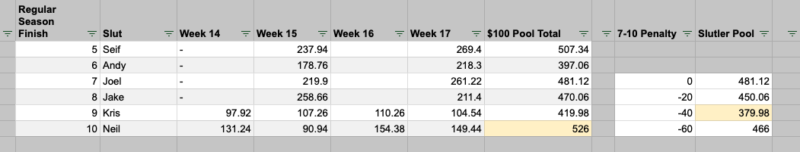
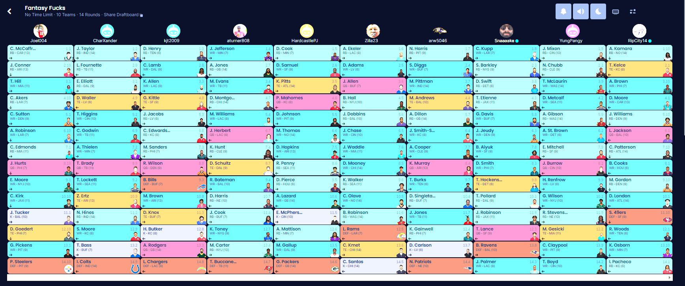

League Rules (as of August 17, 2024)
- FAAB Budget: $100 + $25 when playoffs begin
- $0 bids are allowed for any player who will play before the next waiver period processes. (Updated for 2024-2025 season)
- Ex. you can pick up a player for $0 on Saturday, if he plays at 4:00am, Sunday, in London, etc.
- Ex. a player playing on TNF can be picked up on Thursday for $0
- Ex. a player not playing on TNF can be picked up on Thursday for $1 or more
- A member who violates this rule will be penalized with the following:
- $5 FAAB fine
- The player will be dropped to free agency. If another player was dropped from their team in this transaction, they will remain a free agent.
- Trades will be immediately processed (manually).
- Commissioners hold the right to create a league vote if there is really shady business happening.
- Trades will be processed immediately unless a player in the trade has already been locked into a lineup/bench. If a player is locked, the trade will be processed after Monday Night Football.
Keeper Rules
For a player to be kept the following year, they must be on your roster the day the playoff begins and the day they end. (Updated for 2024-2025 season) Keep any undrafted player or drafted in the third round or later. This includes trade and FA adds: the keeper tag travels with the player.
Ex. Tony drafts AJ Brown in the 11th round, then keeps him the following year in the 10th. He is then traded to Neil. If Neil wants to keep him the following year, it would cost him his 8th.
If the player was drafted, they take the round they were drafted in, then subtract one round for their keeper price.
Ex. a 6th round pick costs a 5th rounder, 4th costs a 3rd.
If you choose to repeat keep, you’ll pay in triplicate for your picks (not $ buy-in). This ensures a player can’t be kept super long-term, in most cases two years maximum unless you scored a HoF talent in the late-late rounds and kept them for three years.
Multiple-Year Keeper Example: * First year: Keeper’s round-drafted, minus 1 * 1 round penalty * Second year: * 1 x 3 = 3 round penalty * Third year: Last year’s penalty times 3 * 3 x 3 = 9 round penalty * Fourth year: Cannot be re-kept as penalty would be -27 rounds
If you want to keep a player that was undrafted, you can keep them at the cost of their ADP round plus two rounds based on their Sleeper ADP. The ADP will be locked in one week before the draft. This will also “set” the players original drafted position.
Example: * Chase Claypool is projected in the 8th round in the ADP. * He can be kept as a 10th rounder, as if you drafted him in the 11th the previous year. * Next year, he would be a 8th rounder.
Players kept in the 2023-2024 draft
| Fucker | Player | Round Drafted in 2023 | Cost if kept in 2024 |
|---|---|---|---|
| Pangy | - | - | - |
| Seif | Ja’Marr Chase | 4th | 1st - second year keep, originally drafted in 7th |
| Tony | Amari Cooper | 6th | 4th |
| Joel | Jalen Hurts | 7th | 5th |
| Andy | DeVonta Smith | 7th | 5th |
| PJ | Ken Walker | 8th | 6th |
| CJ | Tyler Lockett | 8th | 6th |
| Jake | Tony Pollard | 9th | 7th |
| Neil | Drake London | 9th | 7th |
| Kris | Alexander Mattison | 11th | 9th |
Playoffs, Slutler Pool and Payouts
League Buy-in: $225
Playoffs Payout: * 1st: $1400, 2nd: $400, 3rd: $200 Slutler Pool: * $100 winner-take-all. Bonuses: * $25 - Each team making the playoffs will receive a $25 bonus * $50 - Survivor Pool - Starting Week 1, the team with the lowest PF will be removed from the pool. In week 9, only two teams will remain; the team with the higher score will win $50.
Slutler Pool Structure * To keep things spicy for all teams involved during the postseason, there will be two pools for the consolation bracket. * $100 Pool - Teams 5-10 will be in a points pool. The team that finishes with the most points wins $100. * Slutler Pool - Teams 7-10 will be in a Slutler Pool. The team that finishes with the least points, is the Slutler. Teams 8-10 will start the pool at a disadvantage based on their regular season finish. * 7th: - no penalty * 8th: - 20pt penalty * 9th: - 40pt penalty * 10th: - 60pt penalty Example: Using last year’s data, Neil would have won the $100 pool, while Kris would be Slutler.

Archive
OLD KEEPER RULES - FOR 2022 AND BEFORE
If you want to keep a player that was undrafted, you can keep them at the cost of their ADP round plus one round based on their Sleeper ADP. The ADP will be locked in one week before the draft.
Example: * Chase Claypool is projected in the 8th round in the ADP. * He can be kept as a 9th rounder, as if you drafted him in the 10th the previous year. * Next year, he would be a 7th rounder.
-
2022 - 2023 Keepers
Tony - Mark Andrews 4th Round
Jake - DeAndre Swift 3rd Round (2nd-year keep)
PJizzle - Michael Thomas 6th Round
seifzilla - Jamarr Chase 6th Round
RipCity - Javonte Williams 5th Round
Joel - Dallas Goedert 12th Round
DeFi_Mon$ter - Tee Higgins 5th Round
an_d - Justin Herbert 6th Round
KJT09 or BROWNS?? - Marquese Brown 10th Round
PangREEE - Elijah Mitchell 7th Round

-
2021 - 2022 Keepers
Jake - Derrick Henry - 3rd (2nd-year keep)
PJ - DK Metcalf - 9th (2nd-year keep)
Kris - Lamar Jackson - 9th (2nd year?)
Ian - Terry McLaurin - 4th
CJ - Bradin Cooks - 8th
Seif - Antonio Gibson - 10th
Joel - Dionte Johnson - 7th
Neil - JK Dobbins - 7th
Andy - D’Andre Swift - 5th
Tony - Calvin Ridley - 4th